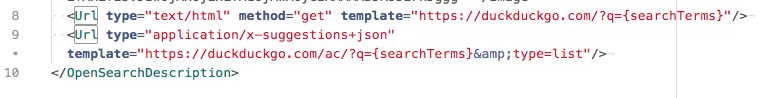

Akademie der Wissenschaften und der Literatur Mainz
Konzeptions- und Methodenpraxis für die Modellierung, Gestaltung und Entwicklung von geisteswissenschaftlichen Online-Anwendungen
BEACON & OpenSearch
Slides: https://goo.gl/oS6Y93 on GitHub
Patrick Toschka |
 @PToschka |
@PToschka |
 Tishwings |
CC-BY 4.0
Tishwings |
CC-BY 4.0
Gliederung
-
OpenSearch
- Idee / Grundlagen
- XML Spezifikation zu OpenSearch
- Requests mit OpenSearch
- OpenSearch Implementation in Firefox
-
BEACON
- Idee / Grundlagen
- Spezifikation anhand des Projekt Gutenberg
- Beispielanfrage über Präfix und ID
- Kombination von OpenSearch (mit seeAlso Format) und BEACON
01
Was ist OpenSearch?
Was ist OpenSearch?
Idee:
- XML Datei, die auf einer Website abgelegt wird
- stellt Informationen zu Methoden bereit, mit denen über die Searchengine einer Website nach Inhalten gesucht werden kann
- entwickelt von Amazon bzw. A9, vorgestellt 2005
Beispiel:
-
DuckDuckGo Suchanfrage mit Suchbegriff "Suchphrase"
Was ist OpenSearch?
Was ist OpenSearch?

Beobachtungen:
"Suchphrase " taucht in der URL auf
- "https://duckduckgo.com/?q " -> URL für die Suche, Fragezeichen nimmt Parameter an
- "q=Suchphrase "
Was ist OpenSearch?
opensearch.xml
- Datei, die ein Seitenbetreiber auf seiner Website ablegt
Bei DuckDuckGo unter

Was ist OpenSearch?
Beispiel einer OpenSearch XML Datei

Was ist OpenSearch?
Spezifikation
| OpenSearchDescription | Die root node des OpenSearch description document | |
| URL | template="... " | Beispiel URL, die {searchTerms} enthalten muss |
| type="text/html " method="get " | Anfrage an Template URL mit Methode "get " liefert ein text/html document zurück | |
| type="application/x-suggestions+json " method="get " | Anfrage an Template URL liefert ein json document zurück, das Suggestions enthält |
Was ist OpenSearch?
REQUEST anhand des OpenSearchDescription URL-Tags...
...mit
{searchTerms} = "Suchphrase " führt also zu...

...unserer gewohnten HTML-Suchseite!
Was ist OpenSearch?
(!) REQUEST anhand des OpenSearchDescription URL-Tags...
...mit
{searchTerms} = "world+of+warcraft " führt zu...

... einer maschinenlesbaren *.json Datei, bspw für Suchvorschläge:

Was ist OpenSearch?
OpenSearch.xml Dateien sind außerdem Standard für Firefox Suchen


02
Was ist BEACON?
Was ist BEACON?
"BEACON ist ein sehr einfaches Dateiformat, mit dem Links auf Webseiten angegeben werden können, die Inhalte zu bestimmten Normdaten bieten."
Quelle: Wikipedia:BEACON
- Ein weiterer simpler Standard
- enthält Liste mit IDs, die zusammen mit einem Präfix eine URI ergeben
Was ist BEACON?
Link zu Dokumentationen, Beispiele und gleichzeitig Aggregator: beacon.findbuch.deDort verlinkt: BEACON Datei zum Projekt Gutenberg, erstellt von Andreas Praefcke
Quelle: www.andreas-praefcke.de
BEACON Metazeilen
- Beispiel IDs, unter denen Einträge zu finden sind
- Zeichenkette, die zusammen mit ID eine URI ergibt
- Gibt an, auf was sich die IDs unten beziehen
BEACON Metazeilen
(Aggreggierte BEACON Datei von beacon.findbuch.de)
- #UPDATE: Freitextangabe, wie oft der #FEED aktualisiert wird
BEACON IDs
Verweisen auf einzigartige "Objekte", die Inhalte zu Normdaten bieten, meist Personen in der GND
12345
- Zur ID 12345 gibt es auf dieser Seite Eintragungen
12345|blabla
12345|0x
12345|-
- Zur ID 12345 gibt es auf dieser Seite Eintragungen - Rest wird ignoriert
12345|23
- Zur ID 12345 gibt es 23 Eintragungen
12345|23|http://example.com
12345|http://example.com
- Angabe von Example- oder Direktlinks möglich
BEACON Beispiel
Aufruf des Website Präfixhttp://d-nb.info/gnd/mit der ID
100191290 führt zu...